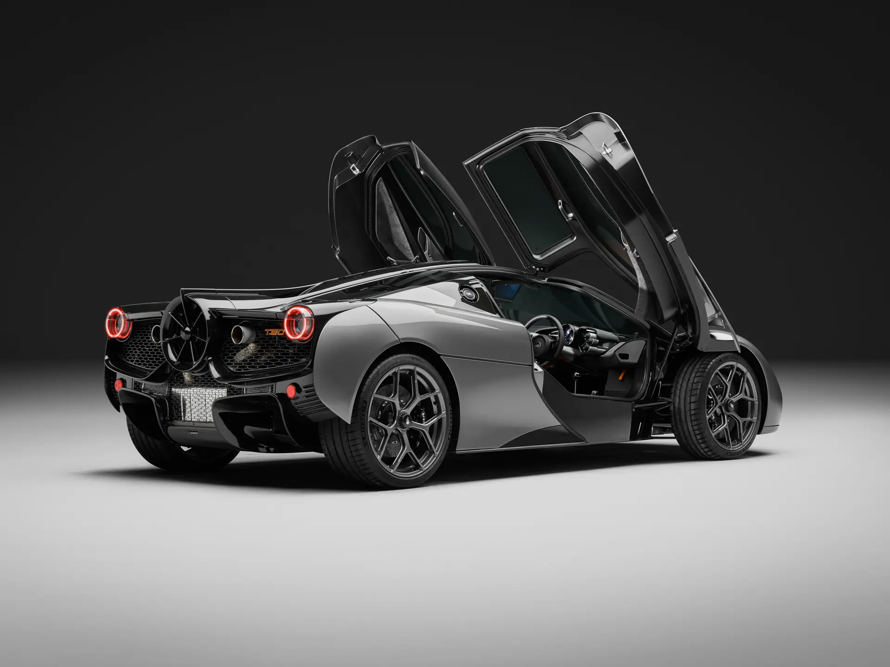
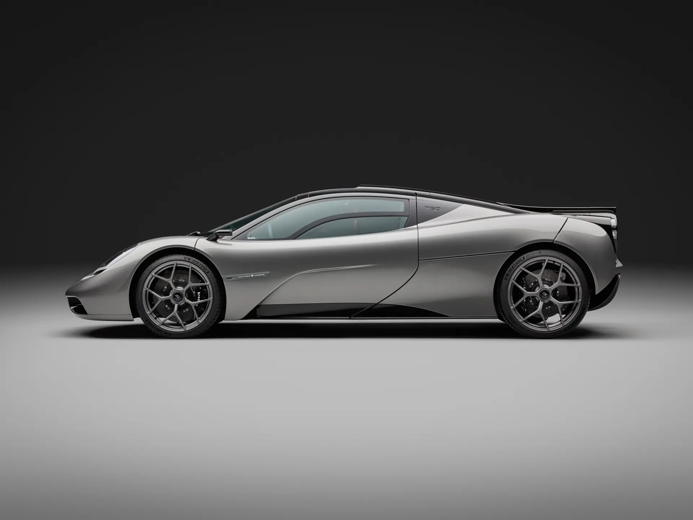

The Gordon Murray Automotive T.50 is a modern reinterpretation of the legendary McLaren F1, designed with a singular focus on delivering the purest possible driving experience. Created by Gordon Murray himself, the T.50 takes the philosophy of its predecessor and refines it using decades of technological advancement.
At the heart of the car is a naturally aspirated 3.9-litre V12 developed by Cosworth, capable of reaching extraordinarily high revs while remaining lightweight and compact. Paired exclusively with a manual transmission, it reinforces the car’s commitment to driver engagement over outright numbers.

One of the T.50’s most innovative features is its rear-mounted fan system, which actively manages airflow to increase downforce and aerodynamic efficiency. This approach allows the car to generate significant grip without relying on large wings or excessive drag, maintaining a clean and purposeful design.
The central driving position, low weight, and focus on simplicity all echo the original F1, but with modern materials, aerodynamics, and engineering precision. The T.50 is not about chasing records, it is about perfecting the fundamentals, offering a driving experience that prioritizes connection, balance, and purity above all else.
| Engine | 3.9L Naturally Aspirated V12 |
| Power | 660bhp |
| Weight | ~1100kg |
| Transmission | 6-speed Manual |
| 0-62 | 2.9 s |
| Top Speed | 226mph |
| Year | 2023 |